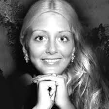

Lisa Jane Smith is the New York Times #1 Bestselling author of The Vampire Diaries, The Secret Circle, The Forbidden Game, Dark Visions, Wildworld and Night World series.
She has written over two dozen books for children and young adults, and has enjoyed writing every one of them. She lives in the Bay Area of California, with a backyard that is
full of flowers, which she adores, especially with many different shades of roses.
She loves to visit a friend’s little cabin in the Point Reyes National Seashore area, which has lots of trees, lots of animals, lots of beaches to walk on, and lots of places to hike. Once,
while hiking, she saw a snow-white buck which allowed her to follow it nearly half a mile. She also likes to collect things: angels (they remind her of her late mother),
tiny boxes from different countries or of fanciful shape, nineteenth century children’s literature, and books about quantum physics—especially about the mystery of the dark
energy in the universe. A militant optimist, she is also part of the Velociraptor Sisterhood (a fancy way of saying that she likes to read, write and discuss books with strong female characters), and she has traveled extensively in Europe and the Far East. The two countries she loves to visit most are Great Britain, with its historic monuments and amazing
country landscapes, and Japan, with its bustling urban life and exquisite mountain scenery.
Her favorite current writer is Terry Pratchett, the author of the Discworld series, for its wild and witty satires on life, death, war, love, assassins, coppers, and Australia.
Her favorite classical writer is Jane Austen. Her favorite poets are Robert Frost and Emily Dickinson. Her favorite movies are The Seven Samurai and Avatar (analyze that!).
She doesn’t have a favorite TV show, because she doesn’t have time to watch TV (and only owns one for playing movies).
Her favorite people are her readers, each of whom she cherishes with deep and lasting affection.